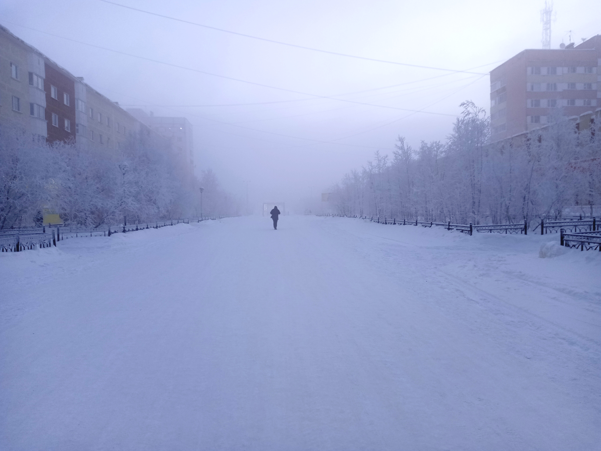
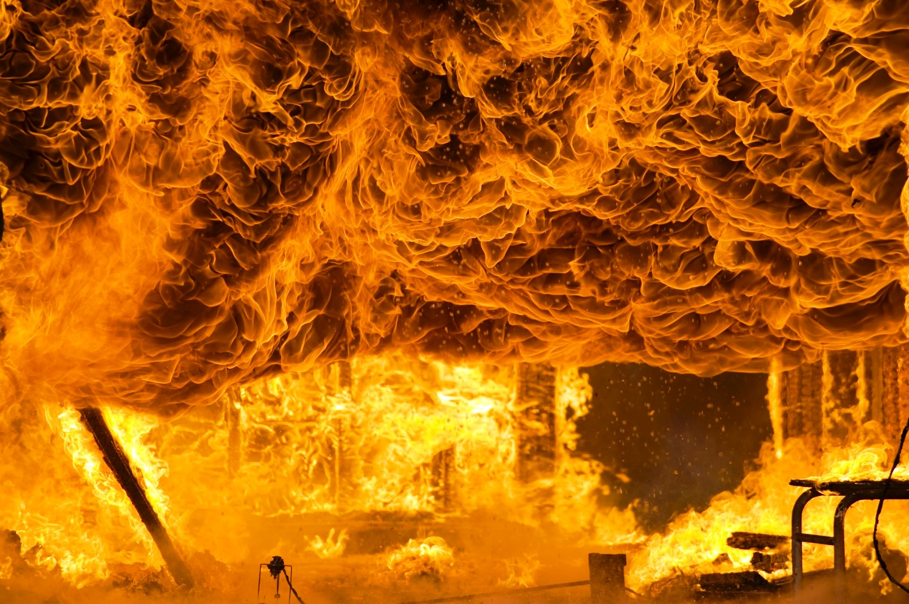
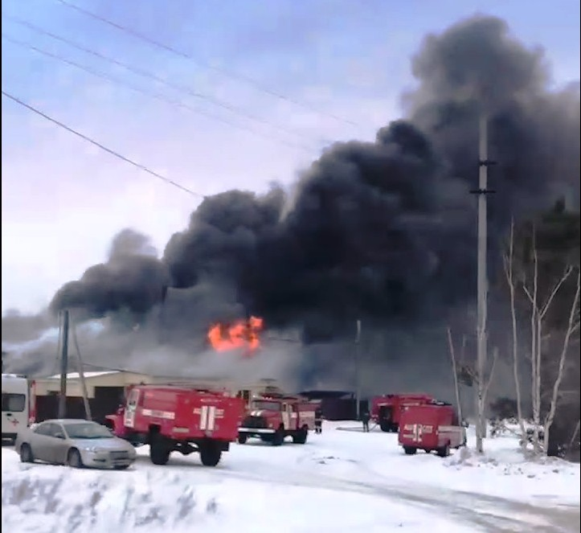
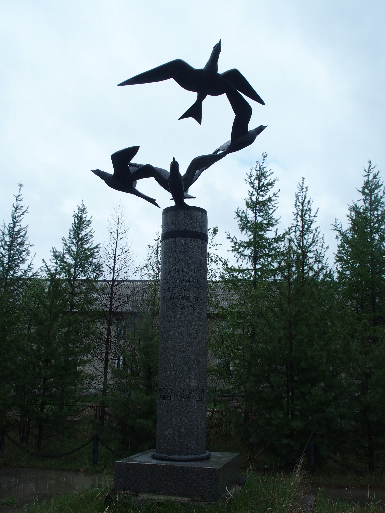

Памятники бывают разные: символы городов и предприятий, монументы, посвящённые знаменательным событиям и политическим деятелям, сражениям и мирным акциям, писателям и литературным персонажам, героям, совершившим подвиг.
Памятники в честь последних чаще всего строгие, потому что поставлены, чтобы вызывать уважение и благодарность. Есть в нашем городе один такой необычный памятник. И очень печальный. Он поставлен в честь женщин, которые совершили на этом месте свой маленький подвиг, но погибли.
Это случилось в понедельник 11 марта 1996 года. Жители молодого города Новый Уренгой частью уехали на газовые промыслы, частью наполнили собой городские учреждения и начали трудиться. Жизнь текла спокойно, неторопливо и ничего не предвещало беды. Разве что температура в этот день на улице достигла -45 градусов, хотя и это было здесь не редкостью. Крайний Север.

В 14 часов 07 минут на пост пожарной охраны города поступило сообщение о пожаре в здании Заполярной дирекции предприятия «Ямбурггаздобыча», расположеного в микрорайоне Заозёрном. Встревоженный голос женщины оборвался на полуслове…
Первым пожар обнаружил один из сотрудников предприятия, который, возвращаясь с обеда, увидел дым, выходящий из вентиляционного короба. Вместе с охранником они проникли в копировальное помещение, где находился очаг пожара. Там с помощью огнетушителей начали тушить огонь. Другие сотрудники эвакуировали из здания людей и оборудование. На улице дул резкий порывистый ветер. Образовавшиеся сквозняки внутри деревянного здания усугубили положение.
Двухэтажные деревянные «бамовские» дома горели в Новом Уренгое регулярно. Несколько домов в год. Построенные в 1980-х годах, они к середине 1990-х исчерпали свой ресурс прочности. Зимой холод заставлял людей подключать к электросетям больше обогревательных приборов. Электрическая проводка не выдерживала. Бывали и другие причины. Старожилы города помнят несколько случаев, когда сгорало по несколько рядом стоящих домов сразу. Но чаще всего жертв удавалось избежать, хотя погорельцы теряли всё свое нехитрое имущество.
В подобных чрезвычайных происшествиях каждая минута бывала на счету, а с момента обнаружения пожара в Заполярной дирекции «Ямбурггаздобыча» прошло уже 12 минут, когда сотрудники пытались победить огонь самостоятельно.
Беда была ещё и в том, что было их немного. Большинство работников дирекции в это время было в Коротчаево. Здесь велось строительство дороги на Заполярное месторождение. После обеда в Новый Уренгой из Коротчаево вернулись 5 девушек-сотрудниц дирекции. Они, подходя к своему зданию, увидели дым, идущий из окон их кабинетов, и, не раздумывая, побежали спасать важные бумаги, документы и бухгалтерию.

07.10.1955 г. — 11.03.1996 г.

13.10.1949 г. — 11.03.1996 г.

24.07.1973 г. — 11.03.1996 г.

05.03.1965 г. — 11.03.1996 г.

09.12.1950 г. — 11.03.1996 г.
Женщины смогли войти в здание. Кто-то из них добрался до телефона и позвонил пожарным. Но назад выйти они уже не смогли. Окна их кабинетов с очень важными бумагами были закрыты решетками. Пламя отсекло выход в коридор. В кабинеты проникли дым и угарный газ.
Пожарные прибыли через 8 минут. Раньше не получилось, потому что до этого огнеборцы заканчивали тушение пожара в другом месте.
Все эти 20 минут огонь был хозяином положения в помещении с большой загрузкой мебелью и всевозможным оборудованием.

К моменту прибытия пожарных огонь охватил около 200 квадратных метров площади.
Из-за высокой температуры, открытого пламени и частичного обрушения потолочного перекрытия звено газодымозащитников войти в горящее здание просто не смогло. Информация о том, что внутри были люди, поступила слишком поздно, спасать было уже некого. Одновременно возникла угроза распространения огня на рядом стоящий жилой дом. Его нужно было отбить у огненной стихии.

Пожар забрал жизни пяти сотрудниц Заполярной дирекции. У всех были семьи, мечты и планы на светлое будущее. Самой молодой из них было всего лишь 22 года.
В память о подвиге своих сотрудниц в 1997 году Заполярная дирекция «Ямбурггаздобыча» возвела на месте сгоревшего здания монумент «Взлетевшие птицы». Автором идеи был директор Заполярной дирекции В. И. Гончар. Её воплотили в жизнь художники И. Г. Уралов, Ю. Н. Павлов, Б. А. Петров знаменитого санкт-петербургского комбината «Скульптура». Памятник открыли в соответствии с постановлением главы администрации города Новый Уренгой № 297 от 03.03.1997.
Над высокой колонной из светло-серого бетона взлетают в небо пять красивых бронзовых птиц. Они олицетворяют собой пять душ. Скульпторы передали в композиции одновременно и полет и замкнутость пространства, в котором оказались героини их трагического рассказа. Чуть ниже на колонне высечена надпись «…В небо несчастьем взметнулся огонь…». На середине высоты колонны – фамилии пяти погибших в огне женщин: «Кодолова Л.И., Шаруева Е.Г., Камалова С.И., Мороз Р.Б., Салихова Л.В.». Высокая колонна стоит на прямоугольной клумбе, которая в летний период всегда украшена живыми цветами. Памятник лаконичен, красив, печален и очень трогателен. Вокруг площадки, где установлен монумент, в 1997 году были посажены саженцы сосен, которые сегодня выросли и создают здесь особенную тишину. Они прячут от досужего взгляда это место. Может быть поэтому о подвиге пяти женщин жители города мало знают.
С марта 1996 года новоуренгойские пожарные возят с собой на вызовы железные крючья, позволяющие с помощью тросов, привязанных к пожарным машинам, вырывать решетки из окон любого здания.
